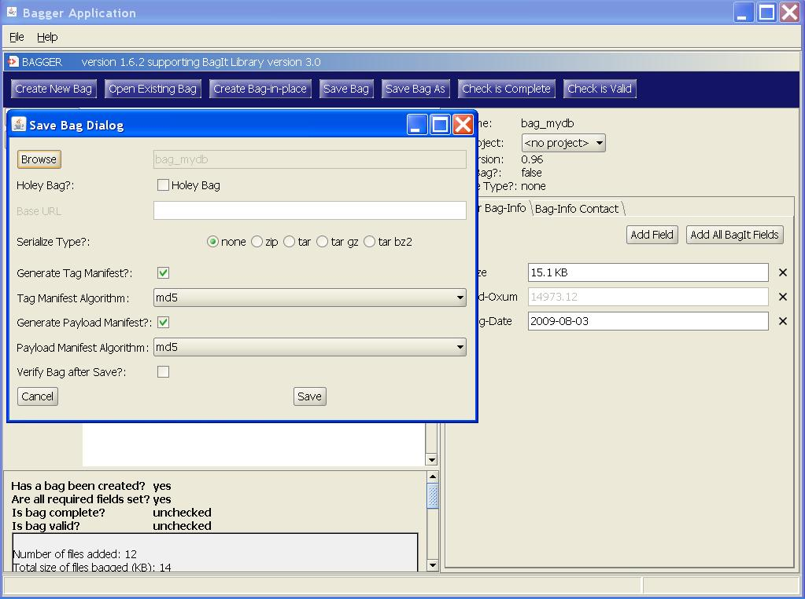
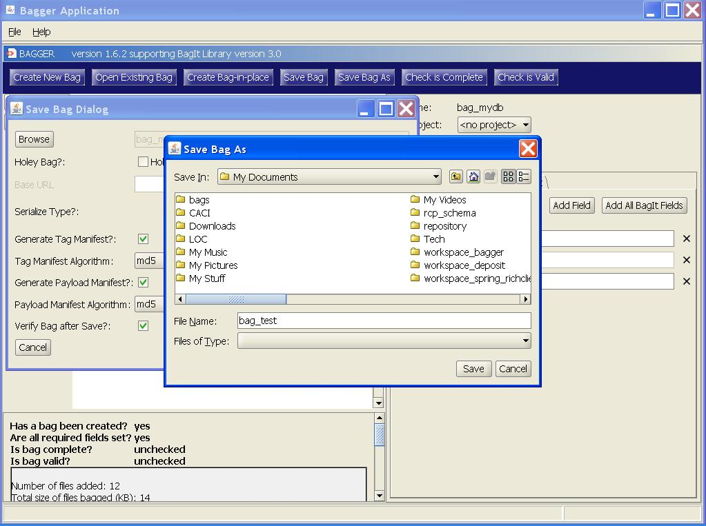
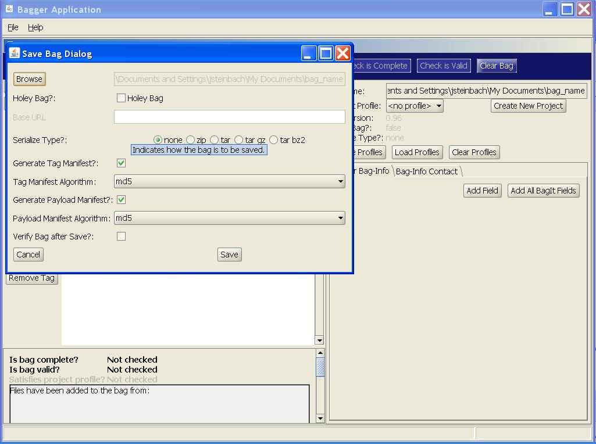
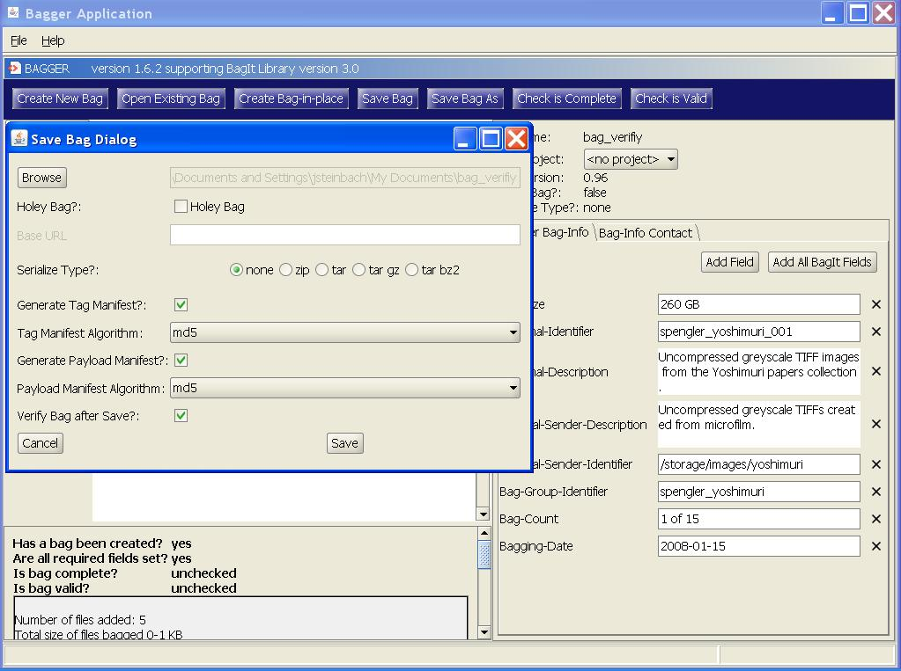
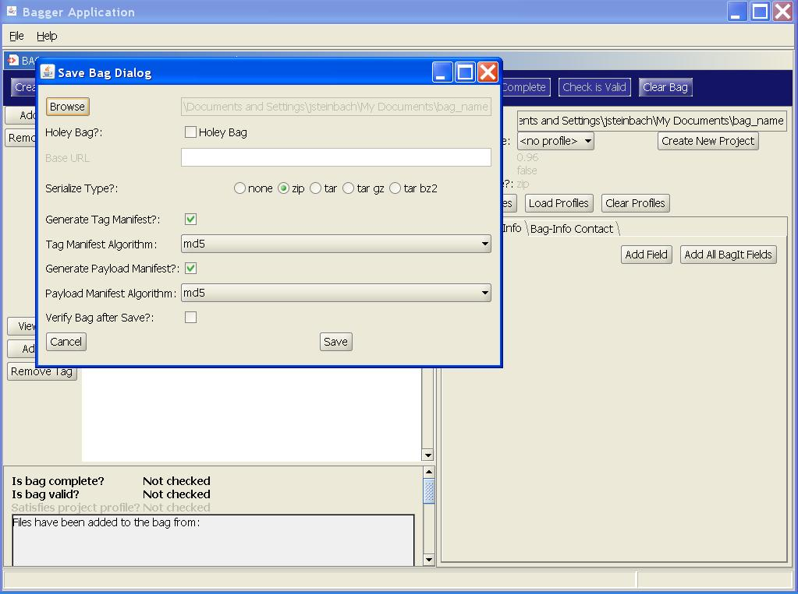
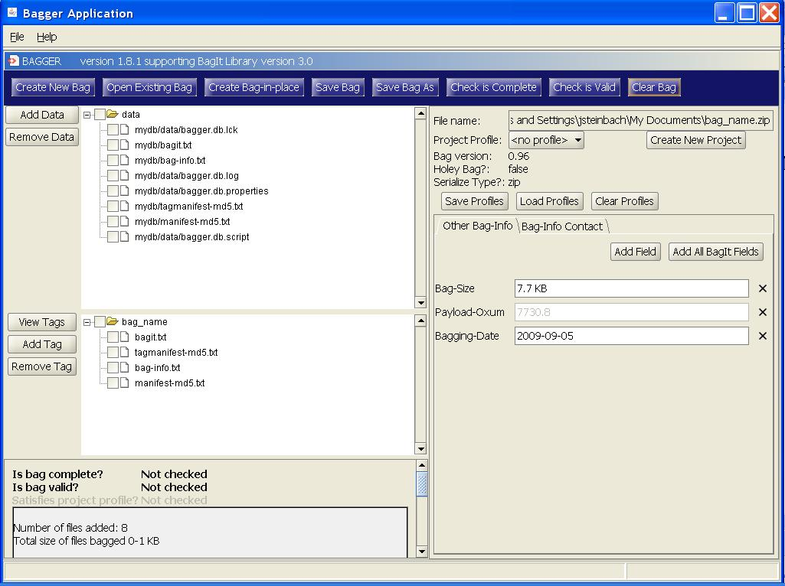
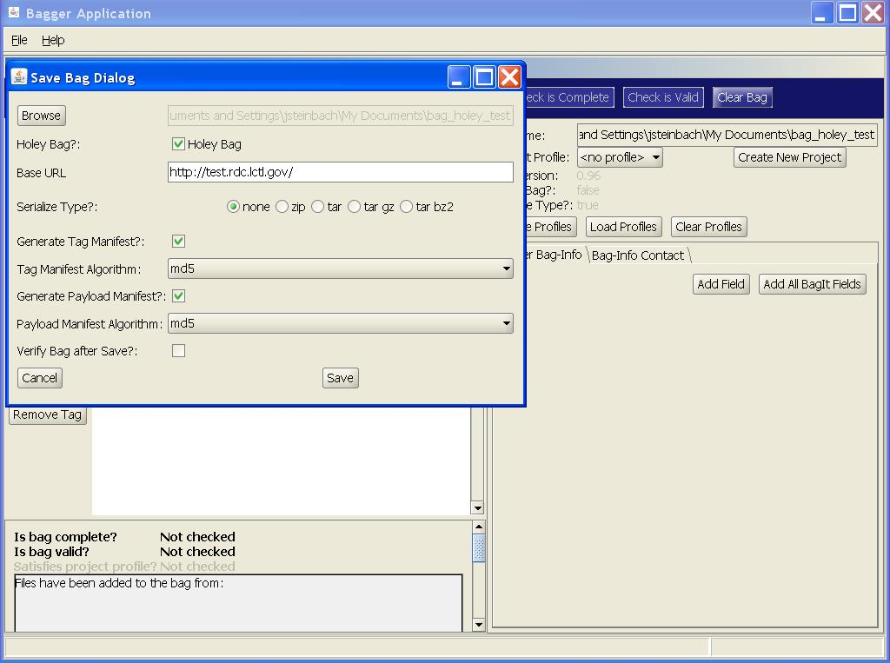
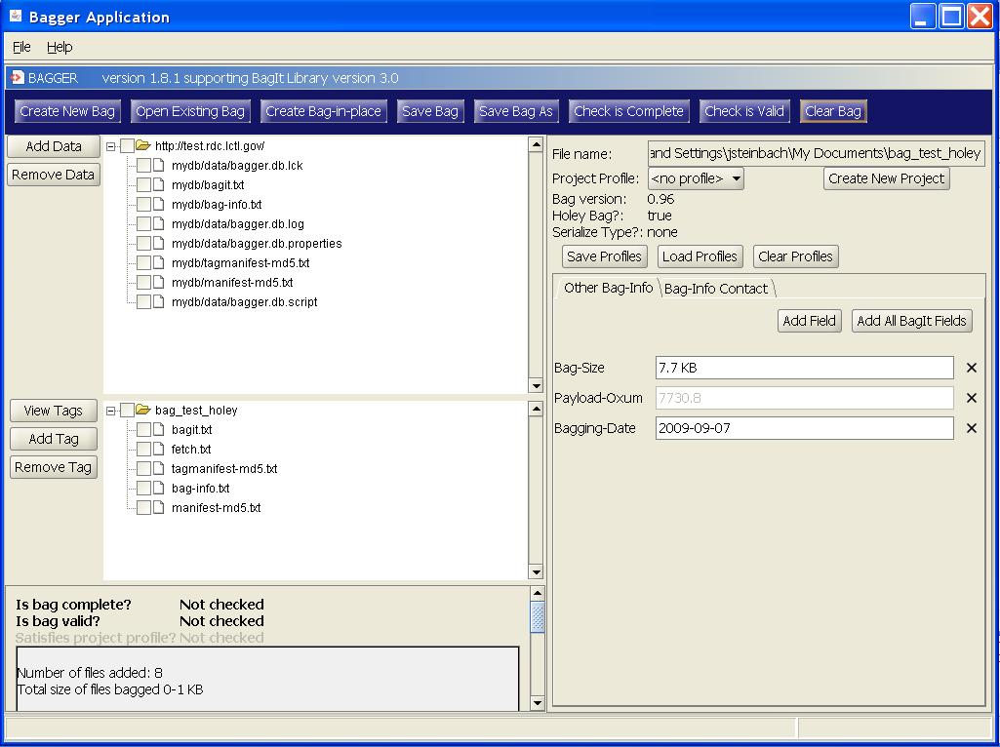

- Basic flow:
- 1. User selects to save bag.
- 2. User provides save options. Save options include:
- * File/directory (User provides file/directory using a File/Directory picker).
- * Format (unserialized, zip, tar, etc.)
- * Whether to generate/regenerate a tag manifest and if so, the algorithm.
- * Whether to generate/regenerate a payload manifest and if so, the algorithm.
- * Whether to verify a bag after writing.
- 3. If the selected destination for the bag already exists, user confirms that files will be overwritten.
- 4. Application completes the bag.
- 5. Application writes the bag and replaces the current bag with the bag returned by saving. (The bag returned by saving references the new bag on disk.)
- 6. Application verifies the bag, if selected by user.
- 7. Application updates the displayed information for the saved bag.
Bagger User Guide: Saving Bags
Saving a bag to disk








Now the user need only select the ‘Save Bag As’ button to choose the location and name for the new bag.
Notice that the ‘Validate Bag’ and ‘Save Bag’ buttons are now enabled. A user may choose to open a previously created bag and then choose the ‘Validate Bag’ button to see whether it is a valid and verified bag. This example will be discussed later.
Since the bag already exists the user can overwrite the existing bag using the ‘Save Bag’ button. The user may also decide to create a serialized version of the same bag by selecting the ‘Serialized Bag Type’ option. To demonstrate both of these options, the user selects the ‘zip’ button under ‘Serialized Bag Type?’ and then selects the ‘Save Bag’ button. A serialized bag file is created in the same location as the directory bag_1 previously created and it has the same name but with a ‘zip’ suffix, e.g. bag_1.zip. The ‘Save Bag’ button is now disabled until a change to the bag is made.
Saving as a holey bag
- Basic flow:
- 1. User selects to save as a holey bag.
- 2. User provides save options. Save options include:
- * File/directory (User provides file/directory using a File/Directory picker).
- * Base URL.
- * Format (unserialized, zip, tar, etc.)
- * Whether to generate/regenerate a tag manifest and if so, the algorithm.
- * Whether to generate/regenerate a payload manifest and if so, the algorithm.
- 3. If the selected destination for the bag already exists, user confirms that files will be overwritten.
- 4. Application completes the bag.
- 5. Application makes the bag holey. (Making the bag copy holey will return a new bag that is holey.)
- 6. Application writes the holey bag.
- 7. Application updates the displayed information for the original bag.

Enter a URL address into the Base URL field and select the ‘Update Bag’ button.
This URL is used to update the fetch.txt file. Now select the fetch.txt tab on the left-hand side of the Bagger Application. The file now includes a list of the files and the URL address from which the file can be obtained according to the BagIt specification for holey bags.
This results in a new holey bag. Notice that a holey bag fails the test for ‘Is bag complete?’ The bag will not be complete until the files are fetched and the bag is made whole.
